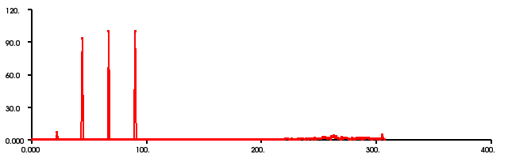

In this tutorial you will see a simple implementation of estimating CVFH signatures from a given clustered point cloud. In order to use that tutorial for your own project, you first have to segment out planars and extract clusters (see Extracting indices from a PointCloud and Euclidean Cluster Extraction) from your original point cloud.
First, go to “PCL_ROOT/test” and copy bun0.pcd to your project folder.
Then, create a file, let’s say, cvfh_signature.cpp in your favorite editor, and place the following inside it:
Now, let’s break down the code piece by piece, skipping the obvious.
// Reading a sample pointcloud //
pcl::PointCloud<pcl::PointXYZ>::Ptr cloud (new pcl::PointCloud<pcl::PointXYZ>);
pcl::PCDReader reader;
reader.read("bun0.pcd",*cloud);
// Computing the normals of the pointcloud for the CVFH estimation //
pcl::NormalEstimation<pcl::PointXYZ, pcl::PointNormal> n;
pcl::PointCloud<pcl::PointNormal>::Ptr normals (new pcl::PointCloud<pcl::PointNormal>);
pcl::KdTree<pcl::PointXYZ>::Ptr tree (new pcl::KdTreeFLANN<pcl::PointXYZ>);
tree->setInputCloud(cloud);
n.setInputCloud (cloud);
n.setSearchMethod (tree);
n.setKSearch (20);
n.compute (*normals);
The code above are already explained in other tutorials. So if you have questions regarding to these, just have a look into the other tutorials.
// Creating the CVFH object and the output of the following estimation //
pcl::CVFHEstimation<pcl::PointXYZ,pcl::PointNormal,pcl::VFHSignature308>::VFHEstimator cvfh;
pcl::Feature<pcl::Normal,pcl::VFHSignature308>::PointCloudOut signature;
// Setting the parameters and variables for the estimation //
cvfh.setKSearch(100);
cvfh.setUseGivenNormal(true);
tree->setInputCloud(cloud);
cvfh.setInputCloud(cloud);
cvfh.setInputNormals(normals);
cvfh.setSearchMethod(tree);
cvfh.compute(signature);
This is the part we are most interested in. First we are creating the CVFH object. It has three parameters: PointInT, PointNT and PointOutT. In our case, PointInT is PointXYZ since our original PointCloud only exists of XYZ datas. Of course you could use other point types, but then you have to change the point type in the <>, as well. The same is valid for PointNT and PointOutT. PointNT is the point type of the normals, we calculated before. In our case they are of type PointNormal. PointOutT is the point type for the output of the CVFH estimation. So it is obvious that we take VFHSignature308 point type, since CVFH computes a signature of the given pointcloud. After that, we have to define a feature pointcloud output object, where the output of the signature estimation is saved. At least we are setting the paramters and variables for the estimation and computing the signature.
Add the following lines to your CMakeLists.txt
add_executable (cvfh_signature cvfh_signature.cpp)
target_link_libraries (cvfh_signature ${PCL_IO_LIBRARY} ${PCL_KDTREE_LIBRARY} ${PCL_FEATURES_LIBRARY})
After you have made the executable, you can run it. Simply do:
$ ./cvfh_signature
You will see something similar to:
Signature was written into cvfh_histogram.pcd!
You can also look at the histogram with the pcd_viewer. Copy the .pcd file to the folder, where you can find pcd_viewer.exe. Then simply do:
$ ./pcd_viewer cvfh_histogram.pcd
The histogram of bun0.pcd should look like this:
